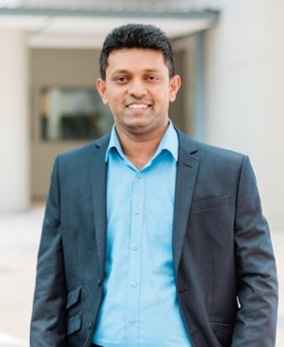

Associate Professor Saman Ilankoon
Chemical Engineering, School of Engineering, Monash University Malaysia
Saman leads the Waste and Critical Metals Sustainability Research Group at Monash University Malaysia. His work spans carbon capture and utilisation, including microalgae-based carbon capture, alongside e-waste recovery and mineral processing. He holds a PhD in Minerals Processing from Imperial College London and is a Chartered Engineer (UK), a Fellow of IOM3 and a Fellow of Advance HE.
Key research areas
- Carbon capture
- E-waste recycling
- Mineral processing
Teaching units
- Carbon capture, utilisation and storage
- Mechanics of fluids
- Separation processes